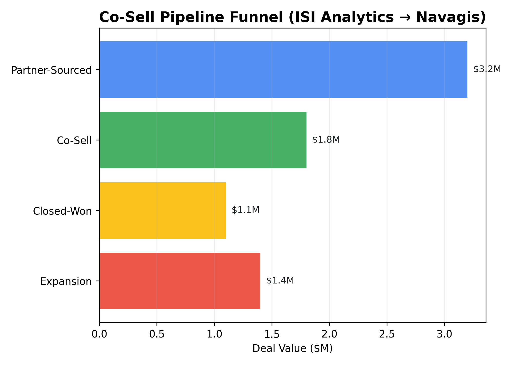
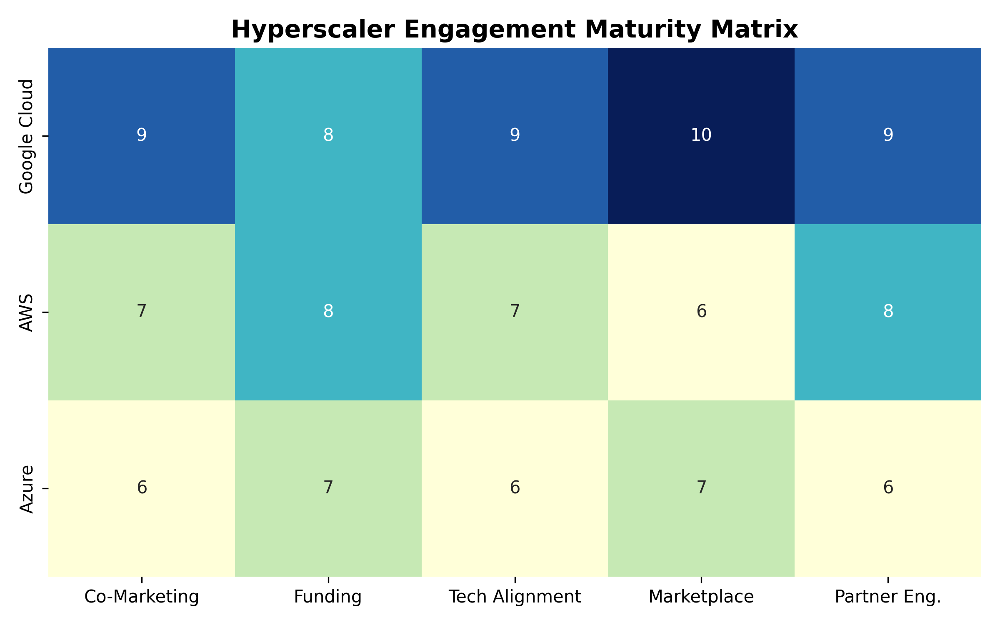
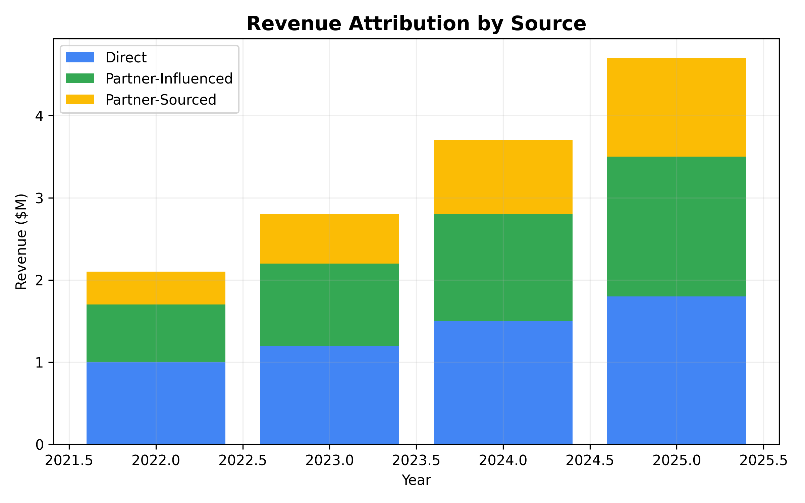
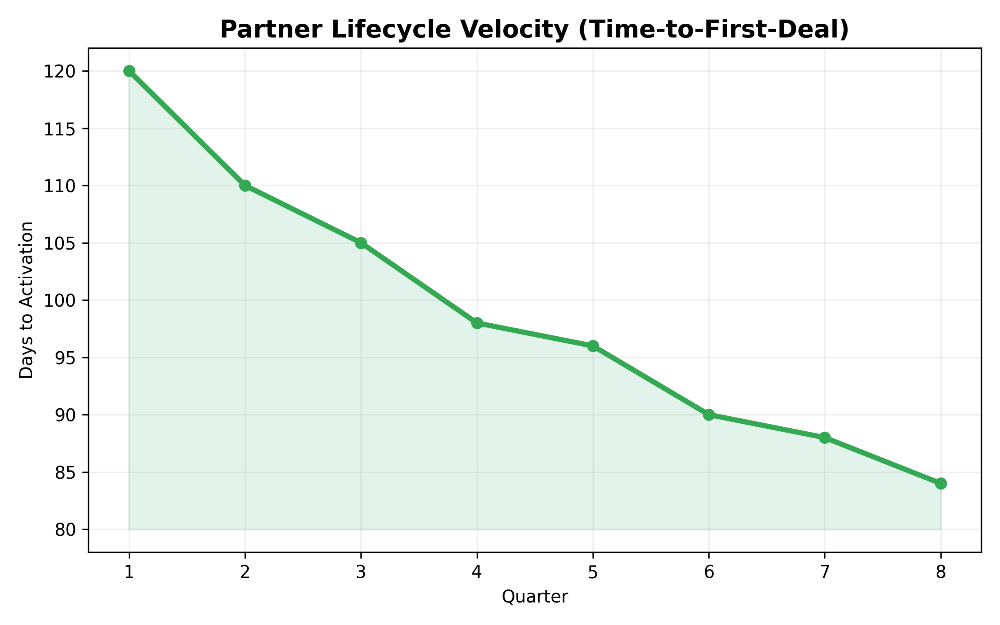
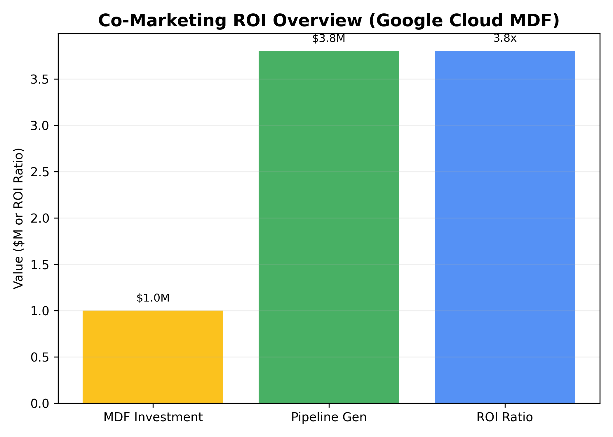
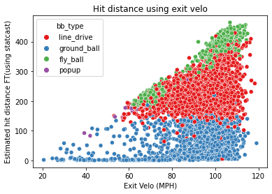
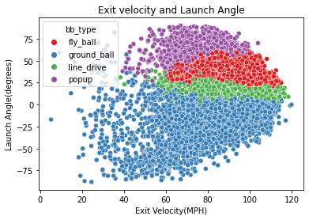

Analytics Work Samples
Below are examples of dashboards and performance visualizations that highlight my data-driven approach to revenue optimization and operational efficiency.
- NavFleet Efficiency Dashboard: Real-time routing KPIs measuring utilization and carbon reduction.
- Sales Pipeline Optimization: Zoho CRM → Sheets automation tracking win rates and stage velocity.
- Golf Performance Tracker: Python-based analytics tool using Rapsodo launch data for dispersion analysis.
Monthly Quota vs. Total Sales Attainment
This visualization demonstrates month-over-month quota performance compared to total sales, showcasing consistency and growth over time.

Partnerships & GTM Analytics
Visual summaries of how strategic alliances, hyperscaler collaboration, and co-sell programs have driven measurable growth and partner impact across ecosystems.





Advanced Sabermetrics & Statcast Analysis
Beyond business metrics, I explore data through my lifelong connection to baseball. Using Statcast data and Python-based visualization tools, I analyze how launch angle, exit velocity, and contact quality correlate with on-field outcomes — applying the same principles of analytics, iteration, and optimization that drive my professional work.



These models were built in Python using Pandas, Matplotlib, and Statcast datasets, emphasizing how small adjustments in mechanics produce measurable differences in outcomes — a principle that applies equally in sales, sports, and strategy.